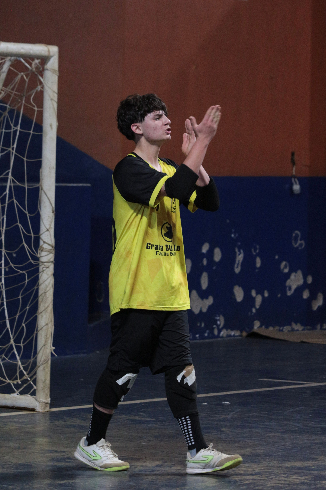

Fotos

.jpeg)
Sobre mim
Meu nome é Rafael Rossato. Sou integrante do Grupo 10 do Projeto Integrador do IFPR e moro em São José das Palmeiras — Paraná.
Neste projeto, estudo como a educação financeira e fiscal pode ajudar as pessoas a planejar seus gastos, evitar desperdícios e tomar decisões mais responsáveis.
Minha trajetória escolar
Sou estudante do Instituto Federal do Paraná (IFPR) e venho construindo minha trajetória por meio das experiências escolares, da convivência com colegas e professores e da participação em projetos educacionais.
Um fato importante da minha trajetória
Fazer parte de um Projeto Integrador tem sido uma oportunidade para desenvolver meus conhecimentos e compreender melhor a relação entre educação, economia e sociedade.
Onde vivo
Bairro Centro — São José das Palmeiras — PRSão José das Palmeiras está localizada na região Oeste do Paraná. Segundo o Censo de 2022 do IBGE, o município possui 3.957 habitantes.
Sua economia está relacionada à agropecuária, à agricultura, ao comércio e aos serviços. Por isso, o planejamento financeiro é importante tanto para famílias e trabalhadores quanto para produtores rurais e pequenos comerciantes.
Momento atual e perspectivas futuras
Atualmente, estudo no IFPR e participo do Projeto Integrador sobre educação financeira e fiscal. Estou aprendendo a relacionar conhecimentos escolares com situações reais da vida cotidiana.
Pretendo continuar estudando e adquirindo conhecimentos que possam contribuir para a organização da minha vida pessoal e para o fortalecimento da comunidade onde vivo.